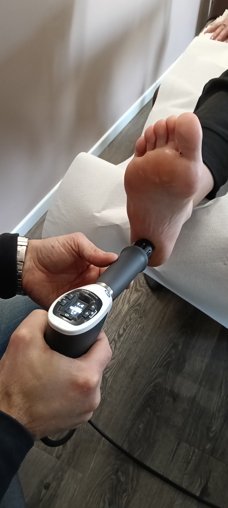

La nuova frontiera della riabilitazione: un sistema robotico avanzato per un allenamento neuromuscolare preciso e su misura per te.
Sintesi è una delle apparecchiature più innovative presenti oggi nel panorama dell'esercizio terapeutico e del recupero funzionale. Sostituisce i pesi tradizionali con la resistenza elettromagnetica, offrendo un controllo assoluto su ogni singolo movimento.
Grazie alla digitalizzazione dei carichi, Sintesi permette di creare profili di resistenza su misura, adattandosi istantaneamente alle tue capacità e allo stato di salute muscolare, rendendo la riabilitazione non solo più sicura, ma incomparabilmente più rapida ed efficace.
